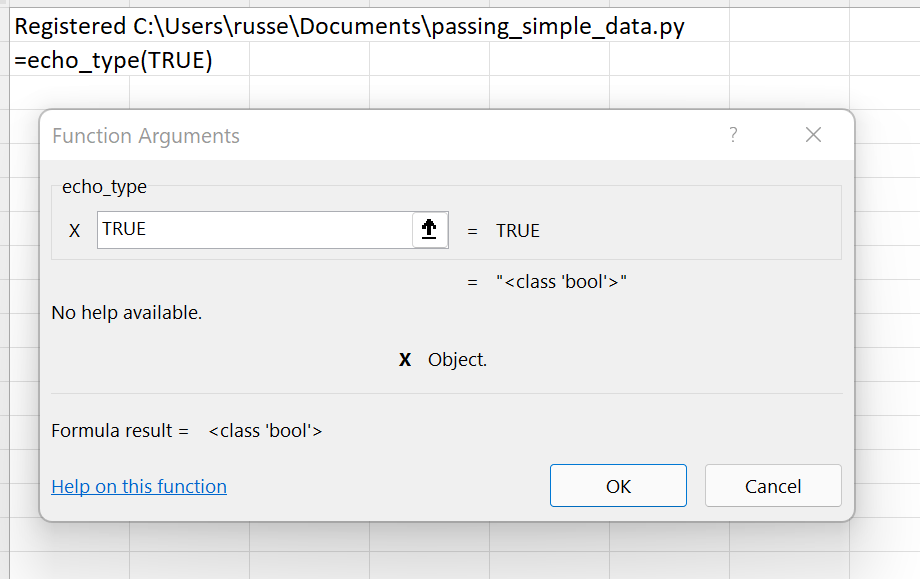
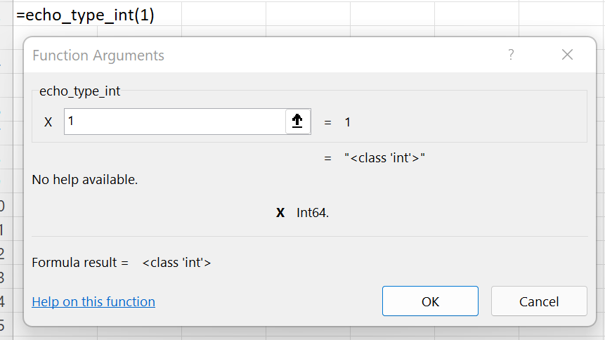
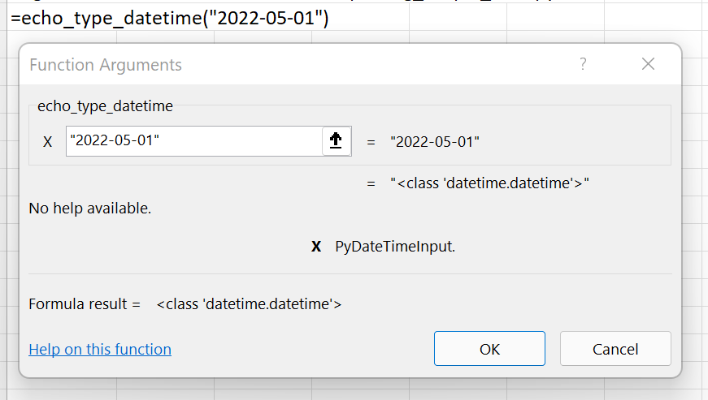

Passing simple data types
xlSlim tries to determine the correct data type to pass to the Python code. Type hints help xlSlim where there is uncertainty.
Let’s see how this works. This Python module contains functions that return the type of the argument x supplied to each function.
from datetime import datetime
def echo_type(x):
return repr(type(x))
def echo_type_int(x: int) -> str:
return repr(type(x))
def echo_type_float(x: float) -> str:
return repr(type(x))
def echo_type_string(x: str) -> str:
return repr(type(x))
def echo_type_bool(x: bool) -> str:
return repr(type(x))
def echo_type_datetime(x: datetime) -> str:
return repr(type(x))
Note
All the Python code and Excel files shown are available from github in the xlslim-code-samples repo. I highly recommend downloading the samples from github. The Excel workbooks contain many tips and tricks.
Save the Python code as a new file on your PC. I saved the file in my Documents folder.
Open Excel and enter this RegisterPyModule() formula (amending the location to match where you saved the file):
=RegisterPyModule("C:\Users\russe\Documents\passing_simple_data.py")
The functions are now available to use in Excel.
Open the echo_type() function in the Function Wizard and notice how different types are passed to Excel.
{kind=link}
Some experimentation will show that xlSlim does these conversions for simple data types passed to Python functions with no type hints:
Excel |
Python |
|---|---|
integer |
float |
double |
float |
string |
string |
bool |
bool |
datetime |
float |
That is not bad, but notice that integers and datetimes are not correct.
Adding Type Hints
As usual, adding type hints helps xlSlim work better. In the Python module above the functions echo_type_int, echo_type_float, echo_type_string, echo_type_bool and echo_type_datetime all have type hints specifying the argument types.
Open the echo_type_int() function in the Function Wizard and notice how xlSlim is able to use the type hints to correctly pass an integer to the Python code.
{kind=link}
The same is true for dates, in fact xlSlim is now able to handle any valid Excel datetime representation.
{kind=link}
Excel |
Python |
|---|---|
integer |
integer |
double |
float |
string |
string |
bool |
bool |
datetime |
datetime |